FEEL2REAL · LOCAL VALIDATION · 2026-10-28 KST
로컬 웹 적용 구조 PASS · 실제 세븐/서수니 3D 캐릭터 미검증.
승인된 캐릭터 GLB를 확인하지 못해 기하학 진단 모형으로만 검사했습니다. 운영 얼굴·의상·MP4를 재생성하거나 교체하지 않았습니다. 유료 생성 0건, 운영 DB 변경 0건, main 병합·배포 0건.
로컬 동작 시안 · 실행·구현 안내 · 3D 결과 JSON · 자산 해시 목록 · GitHub 기준 증거
최신 원격 main은 df425588c97d7f1fb668e23452e638bc9cb14fd4(#912)로 Git fetch와 GitHub API가 일치했습니다. PR #913은 draft/open, head e458864e7340f9f795726605511fa0851b606b79, 미병합입니다. 기존 build CI와 mysql-integration-test CI의 success를 읽어 확인했습니다. 이번 작업에서 DB E2E를 실행한 것은 아닙니다. 새 브랜치의 Java 빌드·원격 CI는 미실행이며, 아래 로컬 검증과 구분합니다.
이번 별도 브랜치는 feat/hyper3d-hologram-poc-20261028이며 #913 head에서 분기했습니다. 기존 PR 브랜치는 수정하지 않았습니다. 변경은 문서 시안 디렉터리 안에 한정됩니다. vendor의 main 안내·영상 JS, presentation.js, 기존 CSS·로고·미디어 원본은 그대로입니다.
이전 디자인·검증 보고서에는 Hyper3D 도입 타당성 및 GLB 전달 방식 조사가 이미 있었습니다. 이번에는 그 문서 검토를 실제 GLB 로더·상태 연동·실패 복귀의 실행 가능한 시안으로 확장했습니다. 기존 문서의 기술 제안은 실제 모델 생성 완료 증거로 보지 않았습니다.
조사한 PR #913 Git 트리, 현재 작업공간, 가져온 Git 커밋 이력에서 Hyper3D/Rodin 구현·생성 기록 또는 GLB/GLTF/FBX/OBJ/USDZ 모델은 발견하지 못했습니다. 연결되지 않은 Hyper3D 계정·개인 저장소·운영 서버에는 자산이 있을 수 있으며, 그 범위는 미검증입니다. 현재 환경은 api.hyper3d.com을 허용하지만 API 자격증명이 구성되지 않았습니다. 생성 요청은 보내지 않았습니다.
운영 미디어는 main의 /api/agent-media/public 목록 → /agent-media/public/{seven|suni}/{front.webp|poster.jpg|idle.mp4|think.mp4|speak.mp4} 구조입니다. 저장소 문서의 기본 서버 위치는 APP_AGENT_MEDIA_DIR, /home/ec2-user/agent-media이며 실제 설정·파일 바이트는 확인하지 못했습니다. 사용자 확인 사항인 F2R_logo_pure.svg·두 poster.jpg와 AI UI 존재를 참고했지만 이번에 운영 화면을 직접 검증한 증거로 계산하지 않았습니다.
역사적 서수니 승인 시트 4개를 찾고 SHA-256을 계산했습니다. 영화 프로젝트의 얼굴·의상 참조이며 홈페이지 복구 원본과 동일하다는 증거는 없습니다. 세븐의 홈페이지 승인 원본 파일도 확보하지 못했습니다. 아래 이미지들은 시안·생성 입력에 사용하지 않았습니다.
| 기존 파일 | SHA-256 | 판정 |
|---|---|---|
| S1_S2/SUNI_S1_S2_APPROVED_SHEET_original.png | a35ceeed47c528c716bf21f97001aca14dd216cc5eefbdcda1d723ba4e7c1e9f | 영화용 승인 참조 · 운영 동일성 미검증 |
| S3_S4/SUNI_S3_S4_APPROVED_SHEET_original.png | 89cc41faa3318279ed9728be993c99c886055105038359f480b10bdc507add0b | 영화용 승인 참조 · 운영 동일성 미검증 |
| S5_S6/SUNI_S5_S6_APPROVED_SHEET_original.png | 37e8ab8c4563056f11551373f7544651125a9ecb4a32804869d1b7b768ef57e5 | 영화용 승인 참조 · 운영 동일성 미검증 |
| base/SUNI_APPROVED_SHEET_original.png | 461926ffdb3a391c6b31d55aa759a4716674264209947d9cf55c7732e7f23be6 | 영화용 승인 참조 · 운영 동일성 미검증 |
원본 보존 절차: 운영 DOM/Network에서 최종 URL·응답·영상 재생을 확인 → 승인 원본을 읽기 전용으로 확보하고 해시·승인 기록 고정 → 파생 GLB는 별도 파일명/경로에 저장 → 정면·측면·후면 및 4상태의 얼굴·헤어·의상·UV·텍스처를 사람 검수 → 승인 전까지 영상 유지. 모델 생성 품질이나 단순 원본 해시만으로 얼굴 동일성을 선언하지 않습니다.
공식 Gen-2.5 문서: 이미지 1~5장 입력, GLB 출력과 PBR을 지원합니다. 명시적인 Gen-2.5 tier 지정이 필요하고 기본 생성은 0.5 credit, Extreme-High tier는 +0.5, extreme-high texture는 +2입니다. 기본 mesh preset은 모바일에 무거울 수 있으므로 낮은 face count와 별도 최적화를 권고합니다. faithful 옵션도 얼굴 일치 보증이 아닙니다. 요청 승인 후 작업 상태를 조회하고 결과를 내려받는 비동기 구조이므로 브라우저에 API 키를 넣을 필요가 없습니다.
공식 Rigging 문서: 기본 0.5 credit, 선택적 애니메이션 입력을 지원합니다. 업로드 모델의 내장 재질·텍스처가 보존되지 않는다는 제한이 있어 기존 승인 모델에 바로 적용하면 의상·얼굴 텍스처 변경 위험이 있습니다. 리깅과 4상태 동작/립싱크 완성은 별도 과제입니다.
공식 요금표 확인 시 직접 credit 단가는 $1.50, Business는 월 $120이며 API 접근이 표시되어 있습니다. Free·Creator는 API 접근이 표시되지 않습니다. 실제 사용자의 플랜·잔액·포함 credit·세금·상업 이용 조건은 계정에서 다시 확인해야 합니다.
| 향후 승인 대상 제안 | 사용량 가정 | 단순 환산 |
|---|---|---|
| 최소 2캐릭터: 각 생성1회+리깅1회 | 2 credits | $3 |
| 후보 비교: 각 생성3회+최종 리깅1회 | 4 credits | $6 |
| 이번 무료 로컬 검증 | 외부 생성·API 사용 0 | $0 |
위 환산은 기본 등급·추가 텍스처 생성 없음 기준이며 구독·세금·별도 애니메이션 제작·수작업 보정 비용을 제외합니다. 결과 품질과 재시도 비용은 보장하지 않습니다. 원본 동일성·계정 조건 확인 후 횟수/상한을 확정해 별도 승인받기 전에는 실행하지 않습니다.
| 항목 | 기존 영상형 | 3D 모델형 |
|---|---|---|
| 얼굴·의상 | 승인 MP4/포스터 원본을 그대로 표시 | 생성·리깅·압축마다 동일성 검수 필요 |
| 상태 | idle/think/speak 기존 파일과 인사 흐름 | idle/greeting/thinking/responding 클립을 main 상태에 매핑 |
| 상호작용 | 고정 촬영 시점, 기존 인사 오디오 | 실시간 동작 가능. 이번 시안에 회전 조작·립싱크 없음 |
| 모바일 부담 | 영상 디코딩·미디어 전송 | 모델/텍스처 전송 + GPU·메모리·발열; 실제 파일 재측정 필요 |
| 실패 대응 | 기존 포스터와 미디어 미확인 안내 | 8초 timeout, 무결성/클립/WebGL 오류 → 기존 영상/포스터 |
| 이번 판정 | 합성 영상으로 로컬 동작 PASS; 운영 MP4 미검증 | 진단 GLB 로컬 PASS; 실제 캐릭터 미검증 |
Three.js의 GLTFLoader와 AnimationMixer를 사용합니다. 기존 Thymeleaf/vanilla JS 구조를 유지하며 React 전환은 필요하지 않습니다. 모델은 동일 origin의 내장 리소스 GLB로 한정하고 런타임 생성 API를 호출하지 않습니다.
301 PASS / 0 FAIL: 기존 시안 75 + #913 기능 복원 118 + main 안내·신청 20 + 새 3D 브라우저 80 + GLB 검증 unit 8. 검사 수는 서로 다른 검증 단위의 합계이며 운영 승인 점수로 해석하지 않습니다. 모든 브라우저 테스트는 DB 없이 localhost에서 합성 미디어를 사용했습니다.
| 화면 | 히어로·화이트 로고·메뉴6개 | 인사·전환·질문·다시 보기 | GLB/영상 복귀 | 운영 캐릭터·실기기 |
|---|---|---|---|---|
| 360px | PASS | PASS | PASS | 미검증 |
| 390px | PASS | PASS | PASS | 미검증 |
| 430px | PASS | PASS | PASS | 미검증 |
| 1440px PC | PASS | PASS | PASS | 미검증 |
| 768px 태블릿 | 기존 검사 PASS | 기존 검사 PASS | 추가 3D 미검증 | 미검증 |
신청 버튼은 안내 문구와 실제 카톡·이메일 경로까지 확인했습니다. 내신 제작소·대시보드·AI AGENT Studio는 시안의 버튼/안내/연결 경로를 확인했으며 도착 페이지의 로그인·업무·실제 AI 모델 응답은 미검증입니다. 운영 사이트 접속과 실제 DOM/Network는 이번 환경에서 수행하지 않았습니다.
75개 결과 · 118개 결과 · main 14개 · main 2개 · main 4개 · GLB unit 8개 · 새 브라우저 실행 로그
Chromium headless + SwiftShader(소프트웨어 GPU), 모바일 viewport/touch 에뮬레이션. GLB 19,584 bytes, 584 triangles, draw call 2. 모바일 DPR 입력3을1.5로 제한했고, 프레임 목표는 모바일30fps/PC60fps입니다. 아래 시간은 GLB fetch~첫 GPU 렌더이며 618.7KiB Three.js 번들 다운로드/초기 import, 전체 페이지 로딩, 실제 네트워크 지연을 포함하지 않습니다.
| 화면 | 첫 렌더 | 약2.2초 구간 프레임 | 프레임 간격 p95 | 실제 DPR |
|---|---|---|---|---|
| 360px | 152ms | 67 | 33.4ms | 1.5 |
| 390px | 68ms | 68 | 33.4ms | 1.5 |
| 430px | 60ms | 66 | 33.4ms | 1.5 |
| 1440px | 118ms | 103 | 33.4ms | 1 |
작은 무텍스처 모형의 결과이므로 실사 인물 모델 성능으로 일반화할 수 없습니다. PC도 p95 33.4ms로 목표60fps를 모든 프레임에서 충족했다고 볼 수 없습니다. 실제 스마트폰 메모리·발열·배터리·Safari·느린망은 미검증입니다. 3D 표시 중 기존 영상 파이프라인이 함께 유지되는 비용도 후속 측정 대상입니다.
| 상태 | 문제·원인 | 다음 작업 |
|---|---|---|
| 미검증 / 통합 차단 | 운영 승인 캐릭터와 동일한 모델/원본 파일 미확보 | ChatGPT Work 브라우저에서 DOM·Network URL/HTTP상태/영상 재생·최종원본 추적. 승인 원본 해시와 비교. 추정 이미지 사용 금지. |
| 미검증 / 생성 전 필수 | 자동 3D 재구성은 얼굴·의상 동일성을 보장하지 않음 | 소스 1~5뷰를 검증하고 파생 결과를 사람이 승인. 불일치하면 영상 유지. 유료 재시도는 상한 승인. |
| 확인된 서비스 제한 | 업로드 모델 리깅 시 내장 재질·텍스처 비보존 | 원본 모델 복제본만 사용, UV/PBR/얼굴·의상 비교 후 연결. 승인 텍스처 보존 가능한 로컬 리깅 경로도 비교. |
| 미검증 / 성능 제한 | 테스트 모형은 실제 캐릭터보다 훨씬 작음. 영상+3D 병행 비용 | 승인 GLB 기준 4MiB·30k triangles·1K~2K 목표로 파생 최적화. Android/iOS 실기기·3G·메모리·발열·idle 비디오 정지 계약 검증. |
| 미검증 / 기능 범위 | 실제 AI 응답·로그인·신청 접수·대시보드 도착 화면은 로컬 정적 서버에 없음 | 별도 읽기 전용 운영 검증. DB 변경 E2E 실행 금지 유지. |
| PASS / 실패 경로 | 404·해시·손상·클립누락·WebGL·timeout·context loss 주입 | 모두 영상 복귀 확인. 이는 고의 오류 주입 테스트이며 운영 장애 발견으로 집계하지 않음. |
아래 16장은 새 3D 검증의 실제 Playwright 캡처입니다. 각각 원본을 열 수 있습니다. 운영 캐릭터 얼굴은 포함되지 않습니다. 추가 10개 실패·접근성·경합 시나리오 캡처는 captures/edge-*.png, 기존 검사 재실행 캡처 40장은 baseline/captures/에 보존했습니다.
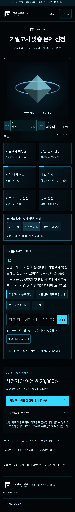
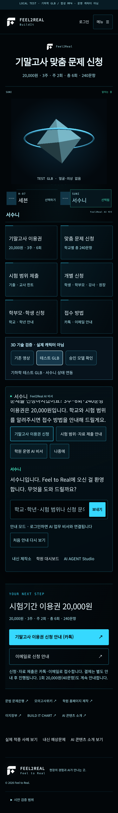
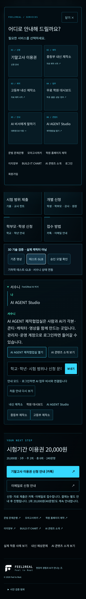
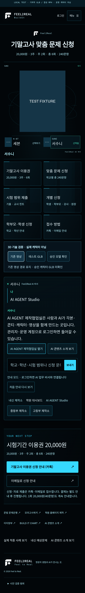
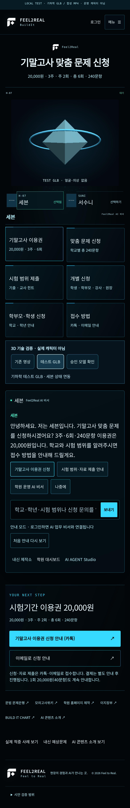
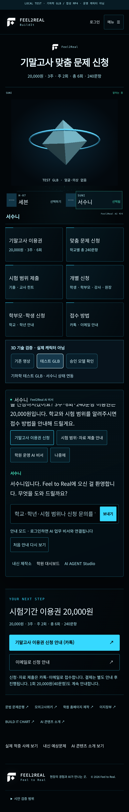
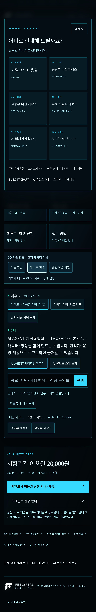
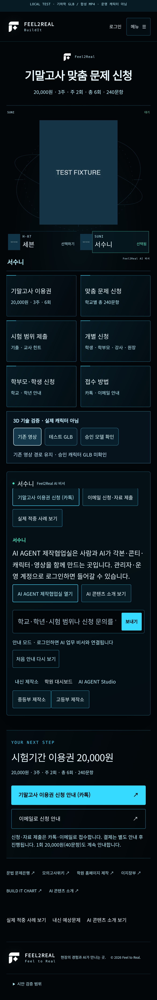
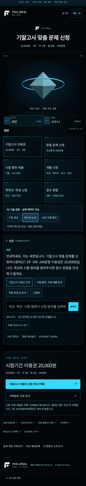
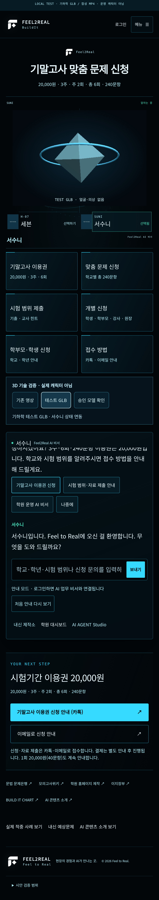
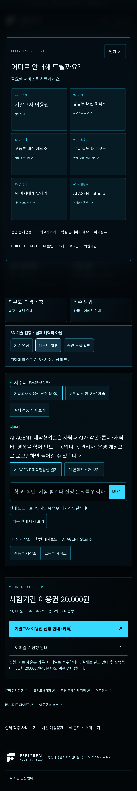
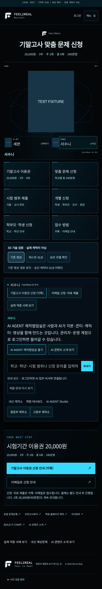
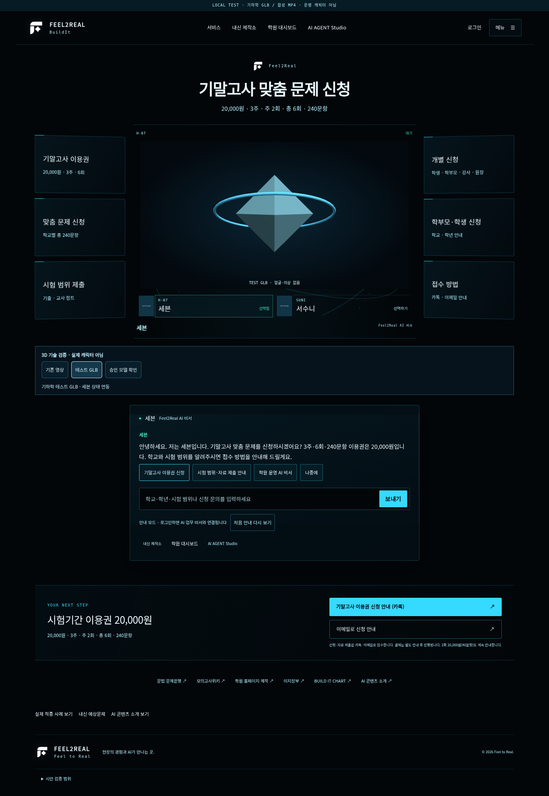
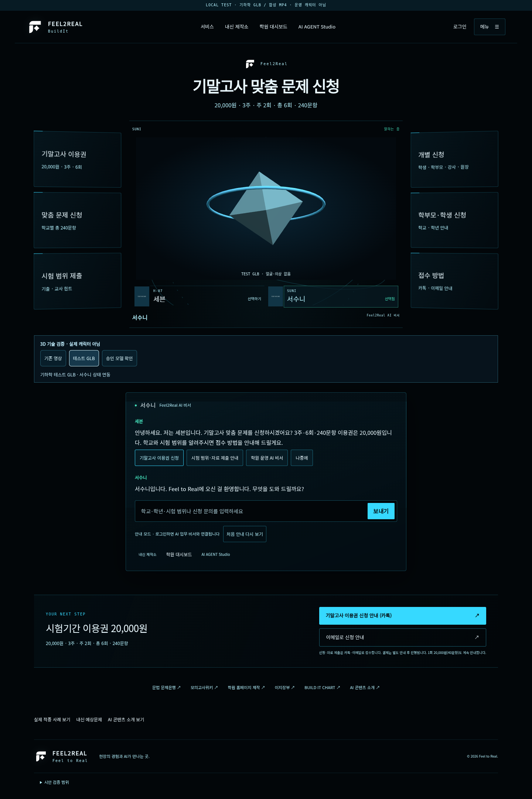
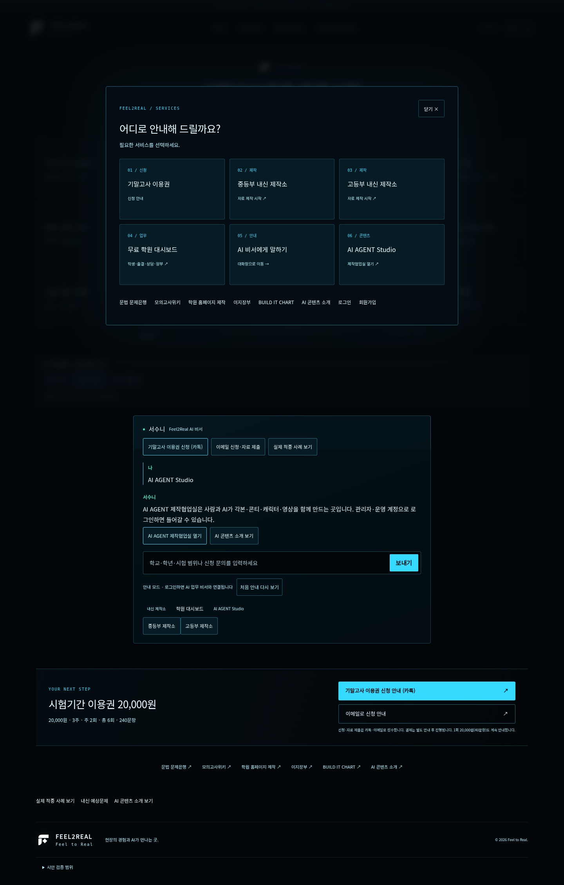
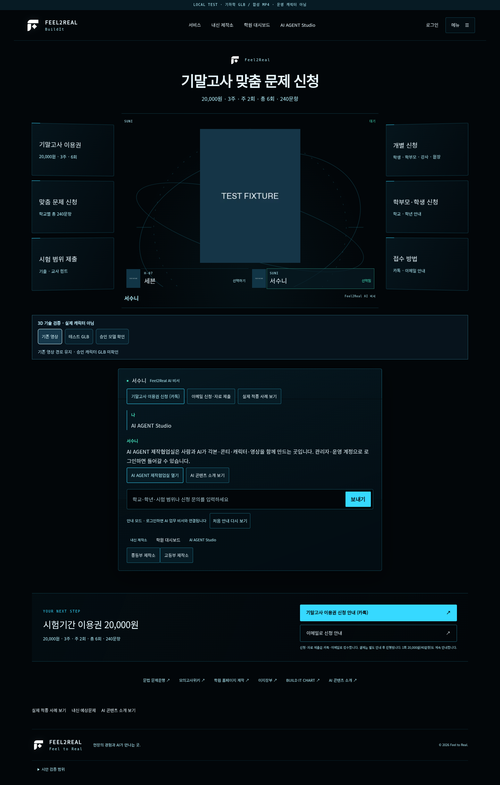